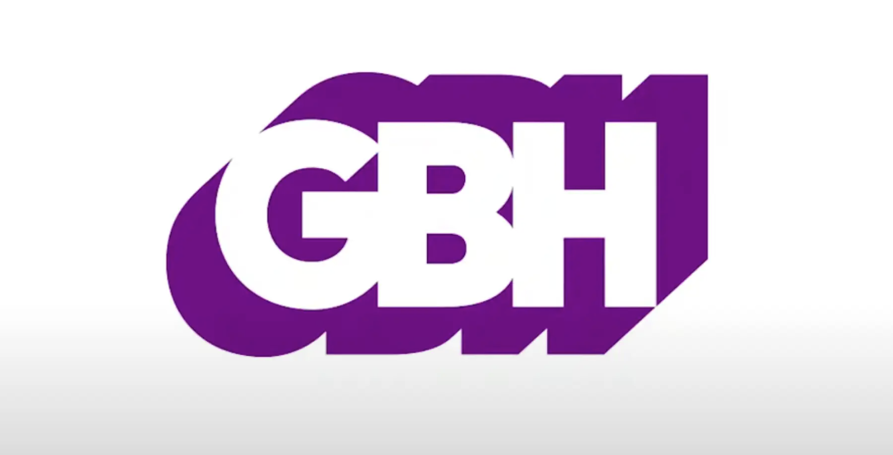

GBH: Medical Debt Investigation
Worked with a journalist at GBH to investigate court data in Massachusetts, analyzing medical debt trends focusing on ambulance services and veterinary care. Created data visualizations and coordinated deliverables for investigative reporting.